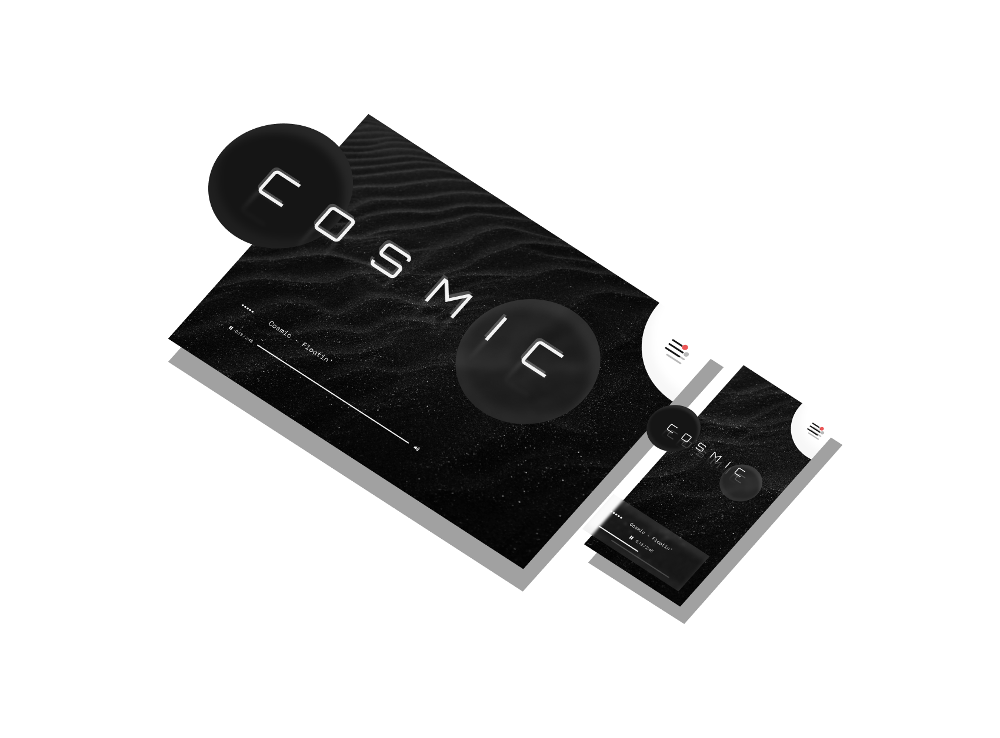

About Me
By Aden Chan
A thin paint will stick to a thick paint. The shadows are just like the highlights, but we're going in the opposite direction. When you do it your way you can go anywhere you choose.
You have to make almighty decisions when you're the creator. When you buy that first tube of paint it gives you an artist license. There we go. The little tiny Tim easels will let you down. Let's just drop a little Evergreen right here.
When you do it your way you can go anywhere you choose.
Let's get wild today. Once you learn the technique, ohhh! Turn you loose on the world; you become a tiger. This is probably the greatest thing to happen in my life - to be able to share this with you.
I'm a water fanatic. I love water. This is gonna be a happy little seascape. Put light against light - you have nothing. Put dark against dark - you have nothing. It's the contrast of light and dark that each give the other one meaning. Let's put a touch more of the magic here. I'm going to mix up a little color. We’ll use Van Dyke Brown, Permanent Red, and a little bit of Prussian Blue.
And that's when it becomes fun - you don't have to spend your time thinking about what's happening - you just let it happen. Let all these things just sort of happen. Don't fight it, use what happens. Let's put some happy little bushes on the other side now.